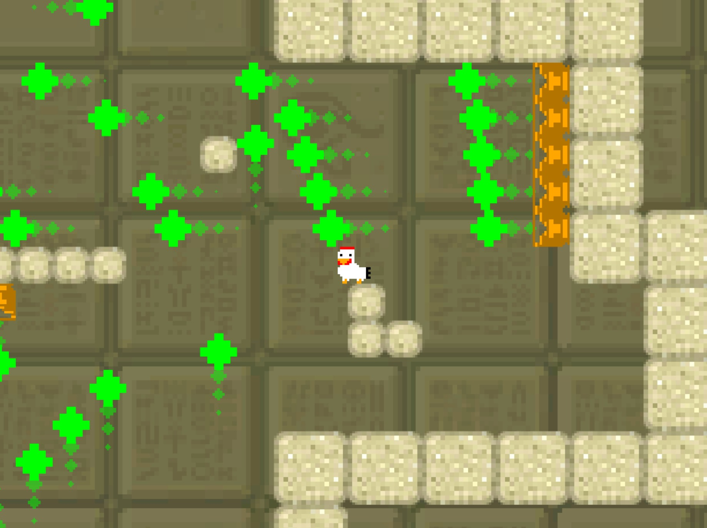
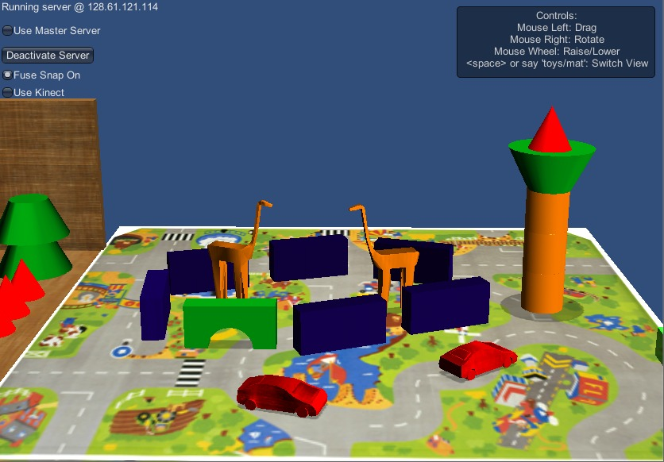
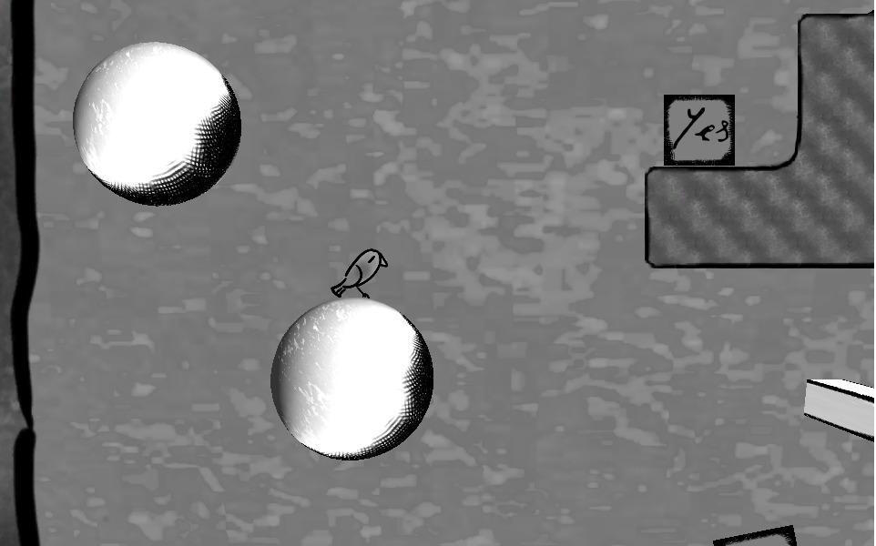
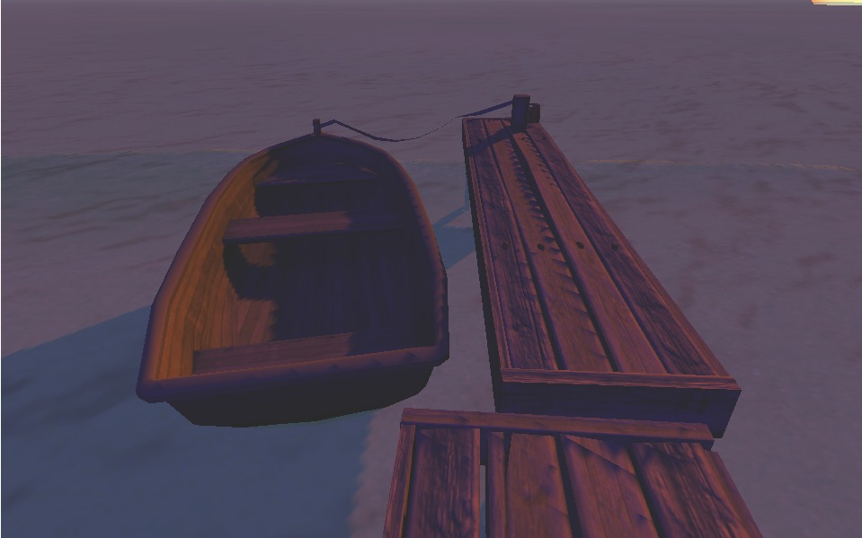
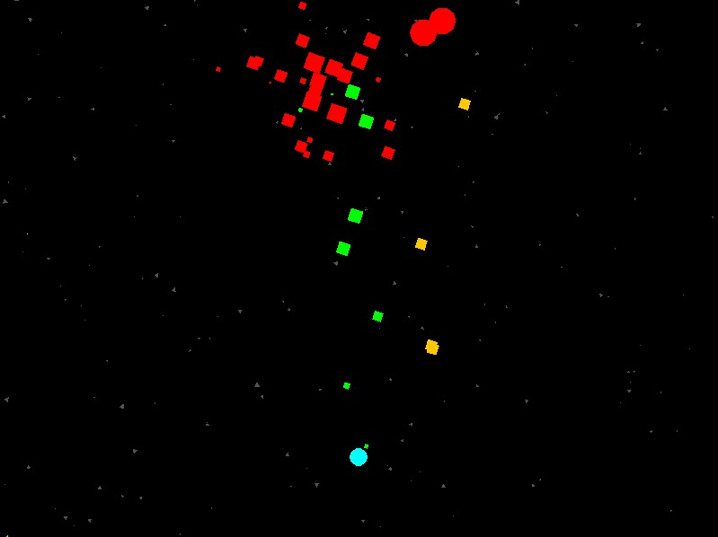
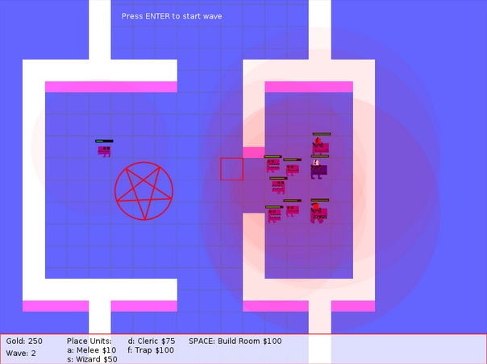
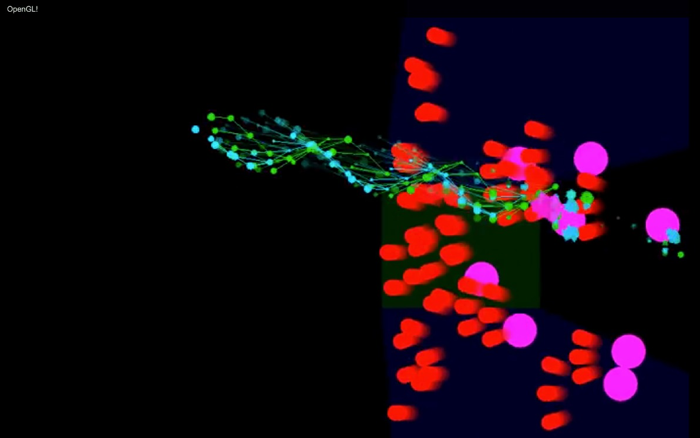
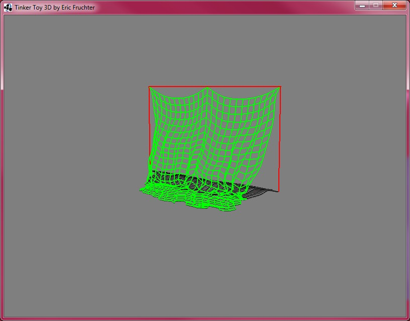
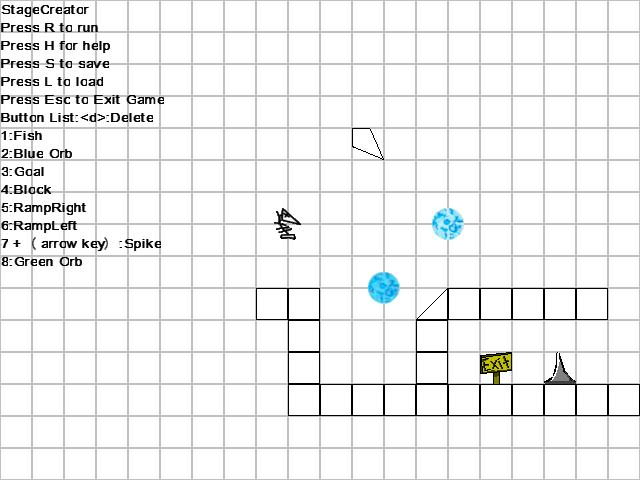

[Home]
Hobby Work
2018
2017
Pyramid Heist
(Windows/OSX/Linux)
My entry for Ludum Dare 36, a global game-jam. Pyramid Heist is a 2D platformer that focuses on skill-based dodging and observation. [Play]
2016
2015
Computational Play Project
The Computational Play project aims to build an artificial intelligence that can play with a human. [Project Page]
Platformer Demo
A proof-of-concept 2D/3D platformer where you control a small bird in a tiny hand-drawn world. Only a single level. [Play it Online]
Hounds
An atmospheric and creepy beach scene, loosely based on one of my favorite stories from the Cthulhu Mythos. In the future I might flesh this demo out into something bigger, but for now it is only a single scene. [Play it Online]
2014
Procedural Game Mechanics
The goal is to build a shoot-em-up game where the mechanics can be altered in real time to produce many different game types. [Code][Research Paper]
DungeonManager 2012
A tower defense game where you can expand your dungeon and defend it with various minions. A group project for the Game A.I. undergrad course at Georgia Tech.
2013
Snakemeleon

A physics platformer where you control a sticky chameleon with a flexible tongue. Features Box2D integration, destructible objects, and a small demo campaign. Made for undergrad Computer Animation at Georgia Tech, in my custom game engine, ToriTools2D.
Kresendur
A bullet-hell shooter with levels that coordinated with background music. I analyzed the music in MATLAB, found the portions of high and low intensity, and used that to control the enemy behaviour and spawn patterns. [Video]
ToriTools2D

A java2d game engine built from scratch with a level editor, pathfinding, animation, physics, and more. Designed and built in my senior year to help me learn a bit about engine design. [Source][Video] [Video 2]
Cloth Sim
A cloth simulation in LWJGL based on the research paper Advanced Character Physics by Thomas Jakobson. [Source]
2012
GameMaker Games
This is the tool that gave me my first taste of programming.